The Daily Grind
Kavita Deodhar and Sumit Gupta
Project maintained by kavitadeodhar Hosted on GitHub Pages — Theme by mattgraham
Overview.
Social Media is a daily diary for many people. It is now easy to let your voice be heard even if it is about a simple thing like our regular cup of coffee. There are many options and people tend to be loyal to their brands. The intent is to explore which brand do people favor based on their tweets. We would like to show how data could provide highly useful insights about the business. This should serve as a source of information and should provide valuable insights. By harnessing the power of data companies can provide better service to the customers. This could be used for better customer service, improving marketing strategy. It could also be used to see how a company could expand their presence. We will also try to see if a region favors one brand over the other. Also the intent is to explore whether momentary emotion conveyed via a tweet has any correlation on customer satisfaction index. We will compare CSAT data from ACSI(American customer satisfaction index) to the scores generated using our code.
Objectives
Through this project we would like to learn and accomplish following objectives:
- Perform sentiment analysis on twitter data for various quick service restaurant brands and determine which brand is most favored.
- Does brand preference change in different parts of the country?
- Perform regression analysis and determine if emotion expressed on twitter ties into/affects/compares to customer satisfaction index calculated using multivariate customer experience data.
- We would like to see if there is a trend (plot against time).
Approach
We began our study by collecting data from following sources:
- Tweets with hash tags of various quick service restaurants were collected using the twitterR package.
- ACSI data from ACSI website for following Quick Serve Restaurants like Dunkin, Starbucks, McDonalds, Panera and Subway.
- Emoticons conversion file We then performed the data scraping tasks. The tweets collected had emoticons. To get the right sentiment from these emojis we had to convert these emojis to correct text. The data was cleansed so that each tweet could impart the correct sentiment. Once the data was cleansed we performed a series of exploratory data analysis to understand the general sentiment of a quick service restaurant. This analysis revealed a lot of facts about how a company is perceived by a customer.
Sentiment Analysis
As the first part of our analysis,we are going to map all the tweets based on the geo code on US map. This is an attempt to see which brand is popular in which region.
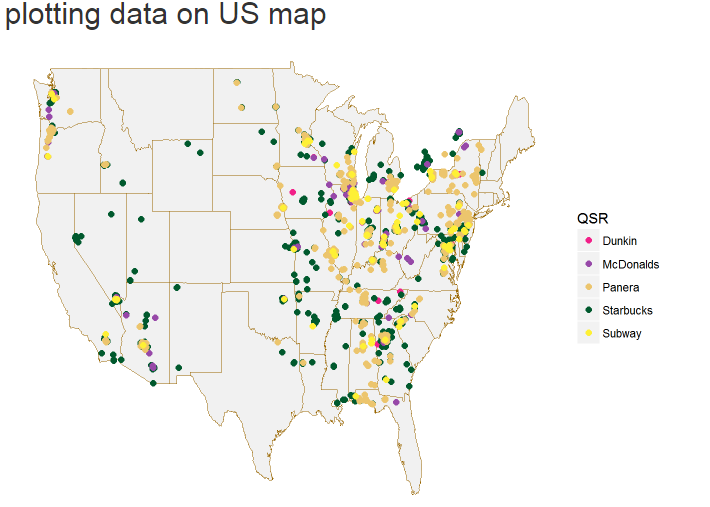 From the map above,we can see the distribution of tweets across the country. We see that the number of tweets for Panera look higher. The number of tweets for every brand was the same.This simply means that the latitude longitude information was available for larger number of tweets for Panera than the other brands.
Next we proceed with cleaning the data before calculating the score for every tweet.This includes removing special characters, punctuations, words like https, https.
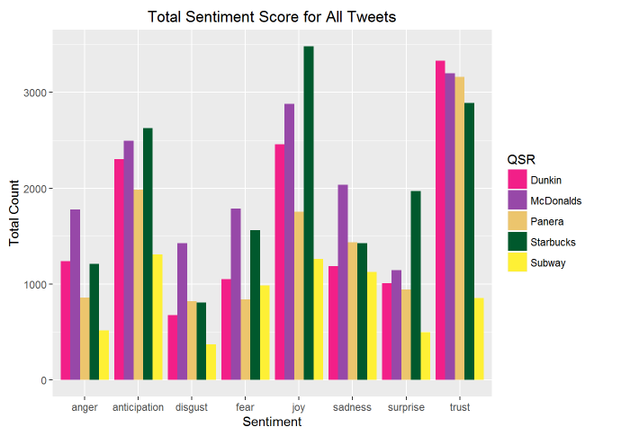
The categories of sentiments are fine, but what are those words that people associate with these brands? What is it that people are talking about in regards to the brands?
Word cloud helps us do just that. Below are the word clouds for all the 5 of our brands. Note that the font is largest for the most popular word and decreases as the frequency decreases.
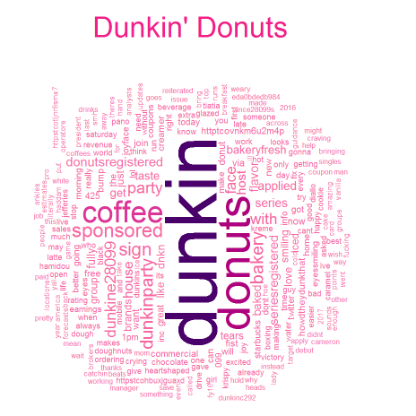
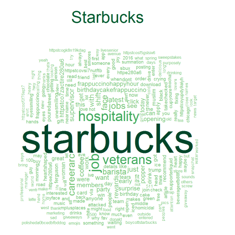
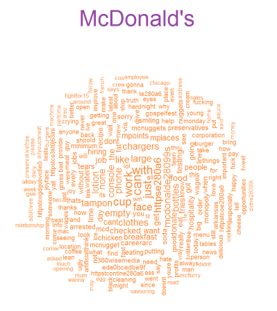
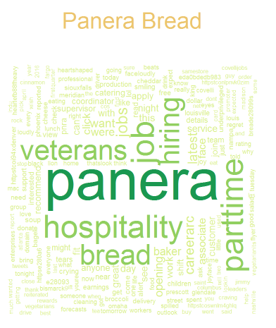
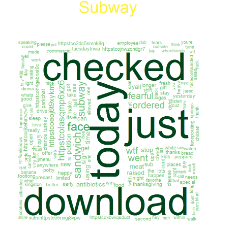
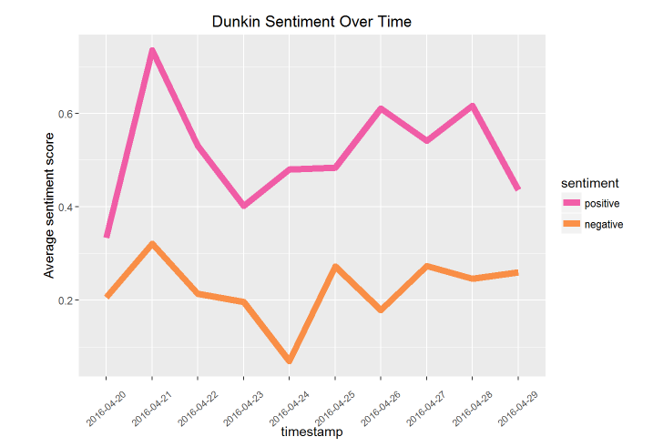
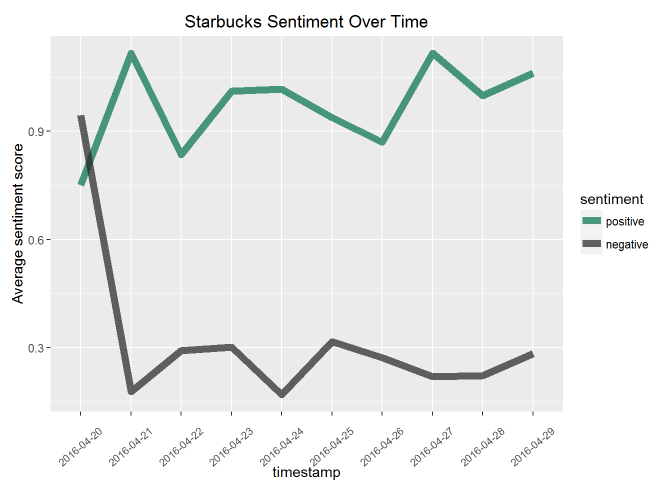
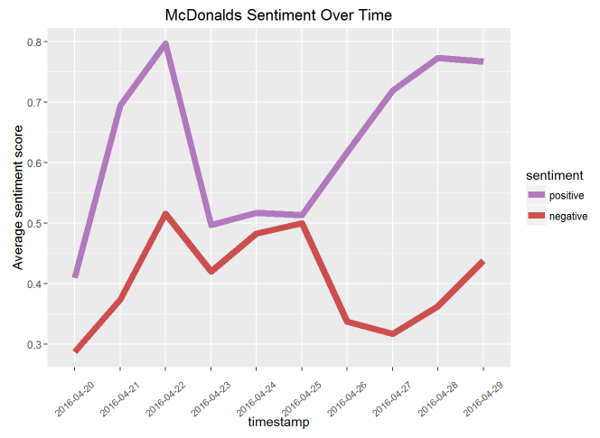
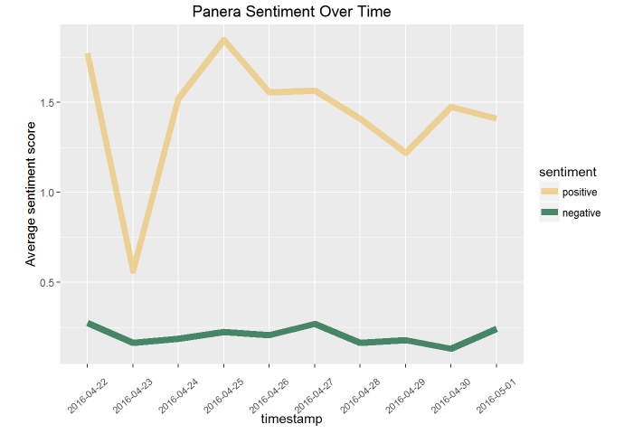
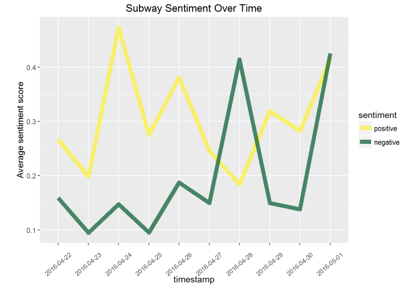


If you prefer to not use the automatic generator, push a branch named gh-pages to your repository to create a page manually. In addition to supporting regular HTML content, GitHub Pages support Jekyll, a simple, blog aware static site generator. Jekyll makes it easy to create site-wide headers and footers without having to copy them across every page. It also offers intelligent blog support and other advanced templating features.
Authors and Contributors
You can @mention a GitHub username to generate a link to their profile. The resulting <a> element will link to the contributor’s GitHub Profile. For example: In 2007, Chris Wanstrath (@defunkt), PJ Hyett (@pjhyett), and Tom Preston-Werner (@mojombo) founded GitHub.
Support or Contact
Having trouble with Pages? Check out our documentation or contact support and we’ll help you sort it out.